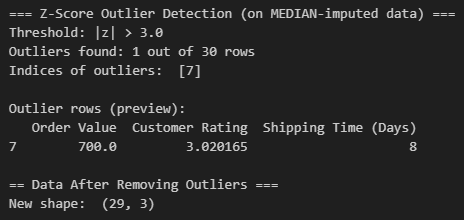
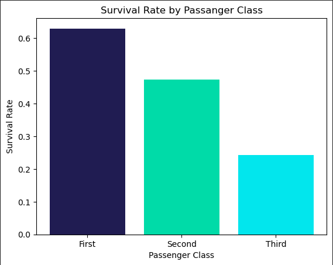

This is a data cleansing project written in Python that organizes data values from an incomplete dataset.

This is a Python project that visualizes different aspects of the Titanic dataset into different graphs.
These projects interact with datasets to visualize data, infer meaning from values, and create stories from a collection of information.
Project #1:
This project is written in Python in Google Colab. It cleans the outliers and missing values from the dataset
to give an accurate depiction of the information. It uses a variety of different methods including dropping null values,
replacing null values with the mean of the dataset, and replacing null values with the mode of the dataset.
Project #2:
This project is also written in Python in Google Colab. This project visualizes the data in the Titanic dataset.
It organizes the survival rate of passengers based on class, visualizes the age distribution of passengers,
and visualizes the survival rate based on age group and gender.